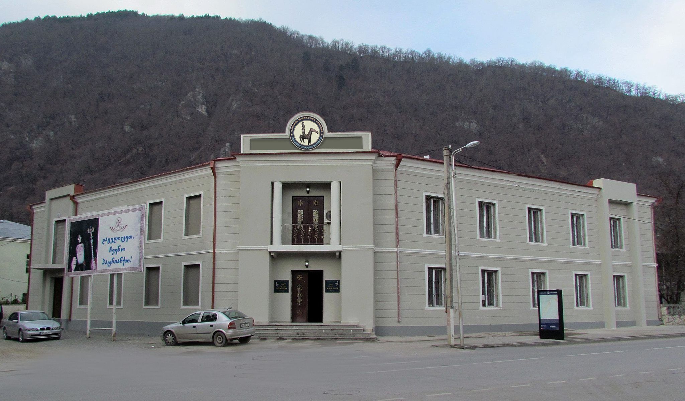

ცაგერის ისტორიული მუზეუმი
ვარლამ მახარობლიძის სახელობის ცაგერის ისტორიული მუზეუმში დაცულია ქვემო სვანეთსა და ლეჩხუმში არქეოლოგიური გათხრების შედეგად აღმოჩენილი მასალა, რომელიც ძირითადად მოიცავს ადრეულ და გვიანი ბრინჯაოს ხანას, ანტიკურ პერიოდს. მათ შორისაა: ბრინჯაოს მხედარი, ბრინჯაოს განძი, აღმოსავლური და კოლხური ბრინჯაოს სტილიზებული ცულები, კავკასიური სიკილი, ხეთური ლაგამი, ქვის ხანის იარაღები: ცულ-წერაქვი, ისრისპირები, სახნისი, დანები; ნუმიზმატიკის ნიმუშები (ალექსანდრე მაკედონელის მონეტა, ლიზიმაქეს ოქროს სტატერი, კეისრების ოქტავიანესა და ადრიანეს მონეტები, არაბული და თურქული მონეტები და სხვ.), XVII-XIX სს-ის საეკლესიო ნივთები, იშვიათი ბიბლიოგრაფიული გამოცემები, დ. ერმაკოვისა და ალ. როინიშვილის უნიკალური ფოტომასალა ლეჩხუმზე. მუზეუმის ფილიალები: ლადო ასათიანის სახლ-მუზეუმი (ს. ბარდნალა), სევერიან ისიანის სახლ-მუზეუმი (ზოგიში), არჩილ გელოვანის სახლ-მუზეუმი (ს. სპათაგორი).
.jpg )
ისტორია
1937 წელს მუზეუმი, როგორც ცაგერის მხარეთმცოდნეობის მუზეუმი დაარსდა, მხატვრის, პედაგოგისა და საზოგადო მოღვაწის ვარლამ მახარობლიძის ძალისხმევით. მანვე მოიძია და შეიძინა მუზეუმის ექსპონატების დიდი ნაწილი. 1943 წლის ოქტომბერში გაიხსნა მუდმივმოქმედი გამოფენა, რომელზეც წარმოდგენილი იყო ბუნებისმეტყველებისა და არქეოლოგიის განყოფილებები. 1996 წლის 2 დეკემბერს გაჩენილმა ხანძარმა გაანადგურა მუზეუმში დაცულ ექსპონატთა ნაწილი, მიუხედავად ამისა, ძირითადი ნაწილი ექსპონატებისა გადარჩა. 2000 წელს ცაგერის მხარეთმცოდნეობის მუზეუმს მიენიჭა მისი დამაარსებლის ვარლამ მახარობლიძის სახელი. 2011 წელს ცაგერის მუნიციპალიტეტმა გამოყო თანხა ნახანძრალი შენობის აღსადგენად, მუზეუმი დაბრუნდა თავის შენობაში. 2012 წელს მუზეუმის დაარსებიდან 75 წლისთავზე საქართველოს ეროვნული მუზეუმისა და ცაგერის ისტორიული მუზეუმის ერთობლივი თანამშრომლობით განხორციელდა პროექტი ცაგერის ისტორიული მუზეუმი - ლეჩხუმის კულტურულ საგანმანათლებლო ცენტრი. პროექტის ფარგლებში მოწესრიგდა მუზეუმის ფონდები, მოხდა ექსპონატების დალაგება პერიოდების მიხედვით, გაიმიჯნა კოლექციები: გეოლოგიის, პალეონტოლოგიის ქვის ხანის, ბრინჯაო-რკინის ხანის, ანტიკური, შუა საუკუნეების, ნუმიზმატიკის, საეკლესიო, ეთნოგრაფიული და დიმიტრი ერმაკოვის ფოტოკოლექციის. მოეწყო ახალი ექსპოზიცია; შემუშავდა კულტურულ-საგანმანათლებლო პროგრამა, სამეცნიერო ბიბლიოთეკით აღიჭურვა სათანადო სივრცე.

მერია
რუსთაველის ქუჩა N 58
(+995) 599 18 24 25
tsagerimeria@gmail.com
საკრებულო
რუსთაველის ქუჩა N 69
(+995) 551 17 97 41
tsagerisakrebulo@gmail.com